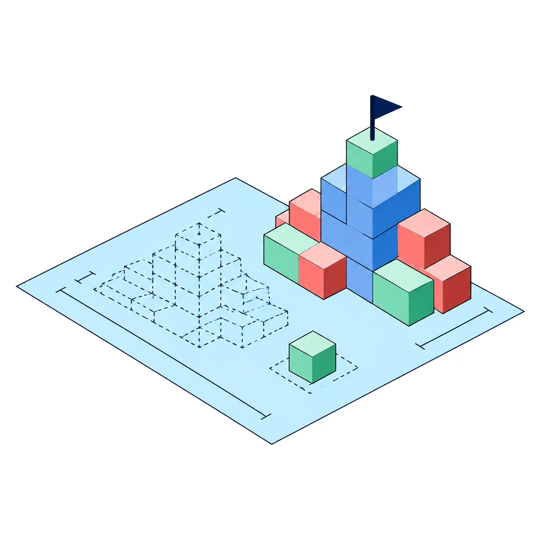

אפיון מערכות וייעוץ טכנולוגי
הגשמת חלומות דיגיטליים
אני יועץ ומאפיין מערכות.
לוקח רעיון למערכת מורכבת, והופך אותו לתוכנית שאפשר לבנות לפיה.
ליזמים יצירתיים שמאמינים בעצמם, ורוצים חבר קרוב וטכנולוגי שילווה אותם בדרך.

מה אני עושה בשבילכם
מאפיין, מתכנן ומלווה. עד שהחלום עובד.
לפני שמשקיעים בפיתוח, כדאי לדעת בדיוק מה בונים.
זו העבודה שלי.
אפיון מערכת
הופך את החלום למסמך אפיון מסודר: מה המערכת עושה, בשביל מי, ואיך.
מהמאקרו אל המיקרו.ארכיטקטורה ותכנון
מתכנן את מבנה המערכת לפני שכותבים שורת קוד אחת.
ההתמחות שלי: SaaS, אוטומציה, AI ו-CRM.תוכנית עבודה
מפרק את הדרך ל-Roadmap, להחלטות והכרעות, לספרינטים, למשימות ולאבני דרך.
ייעוץ וליווי
נשאר לידכם כחבר קרוב וטכנולוגי, ומייצג אתכם מול בתי התוכנה וספקי הטכנולוגיה.
למה לתכנן
תכנון עולה הרבה פחות מביצוע
כמה חשוב לתכנן, ולתכנן נכון: כשמתכננים נכון יותר את התהליכים שרוצים לפתח, חוסכים הרבה בהמשך הדרך.
רוב האנשים בעולם מתכננים שנה ובונים תשע שנים.
הסינים מתכננים תשע שנים ובונים שנה.
תכנון בנייה
כדאי ללמוד מהסינים, כי הם משקיעים המון משאבים בתכנון לעומת הביצוע.
העלות של תכנון נמוכה בהרבה מהעלות של ביצוע.

מי יאפיין וילווה אתכם
מישהו שמבין עניין, וקרוב לליבך
חשוב שיהיה לידך מישהו שיודע את הצרכים שלך, את המגבלות ואת היתרונות, ויודע למנף אותם.
אני מאפיין מערכות ויורד לפרטים, עם ניסיון רב במערכות מידע, במערכות פינטק וב-Product Management.
אני ארכיטקט של מערכות אינטרנט, עם התמחות ב-SaaS ובעולמות האוטומציה, ה-AI וה-CRM.
ככה אני עובד
5 טיפים של מנצחים
חמישה כללים מהניסיון שלי, שלפיהם אני מאפיין ומתכנן כל מערכת.
-
תכנון ואפיון היררכי מוקפד
מהמאקרו אל המיקרו.
-
קובץ אחד שממפה את כל המערכת
קובץ דינמי אחד שממפה ומרכז את כל הארכיטקטורה של המערכת, השירותים והדגשים המרכזיים.
כזה שמאפשר לכל סוכן AI לצלול בשנייה ולהכיר את כל המערכת מקריאה של קובץ אחד קצר, שמתעדכן אחרי כל סשן של שינויים. -
תיעוד של החלטות והכרעות, והיררכיה ברורה של קבצים
כל רמה נגזרת מזו שמעליה:
- אפיון-על
- Roadmaps
- החלטות והכרעות
- ספרינטים
- משימות
- אבני דרך
-
כל משימת AI מוגדרת בשתי הגדרות מדויקות
א. מה עליו לקרוא כדי לצלול אל המשימה.
ב. איך בדיוק עליו להגיש אותה, ומה הצ'ק-ליסט שעליו לעמוד בו כדי להגיש. -
לא ניגשים לפיתוח לפני עיצוב ומוקאפ
הרבה פעמים האפיון והחזון משתנים לאור העיצוב.
העיצוב מגלה את האמת ומוביל להחלטות מכריעות.
וגם ה-AI ניגש לעבודה הרבה יותר טוב כשיש עיצוב שכבר עבר אישור.
כיף להשתמש לזה ב-Google Stitch או ב-Claude Design.
אפיון מערכות וייעוץ
ספרו לי על החלום
כמה מילים על מה שאתם רוצים לבנות, ואחזור אליכם.
הייעוץ הראשוני חינם.
אפשר גם לתאם שיחה ישר ביומן שלי.